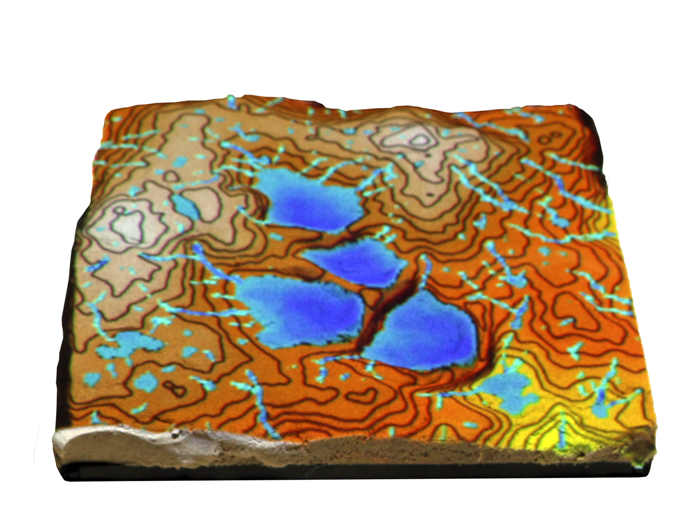
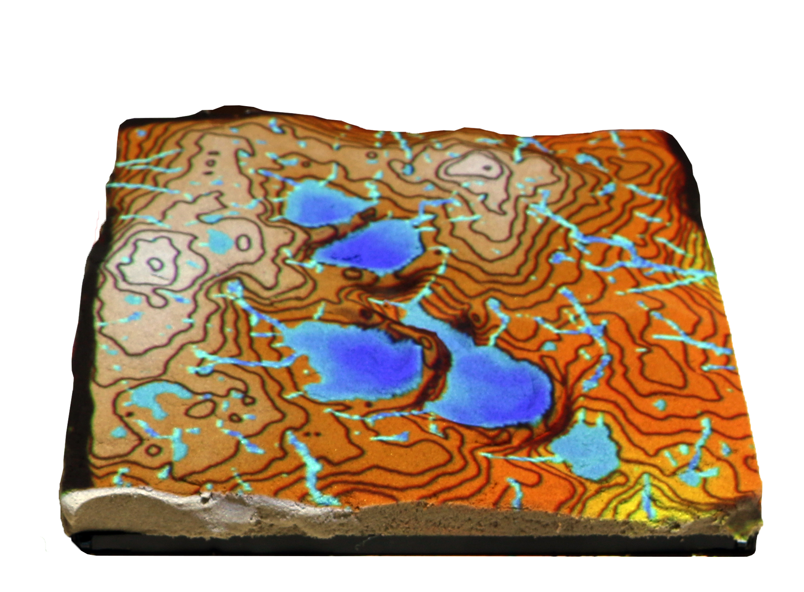
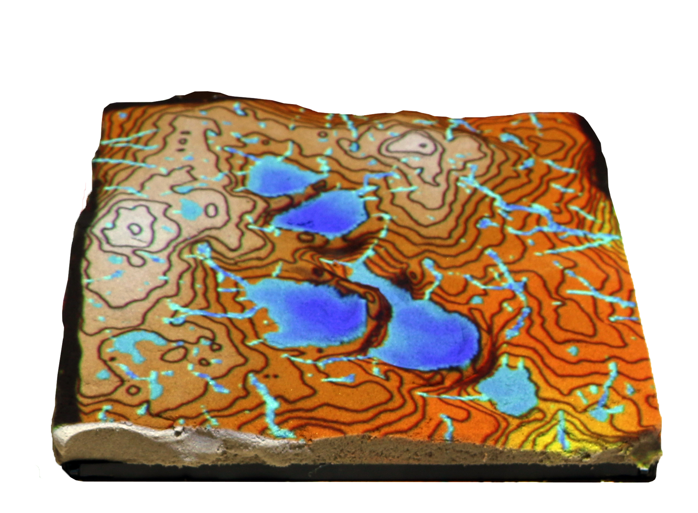
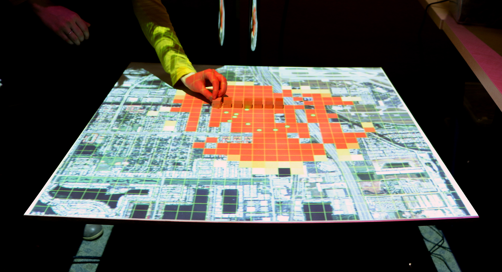
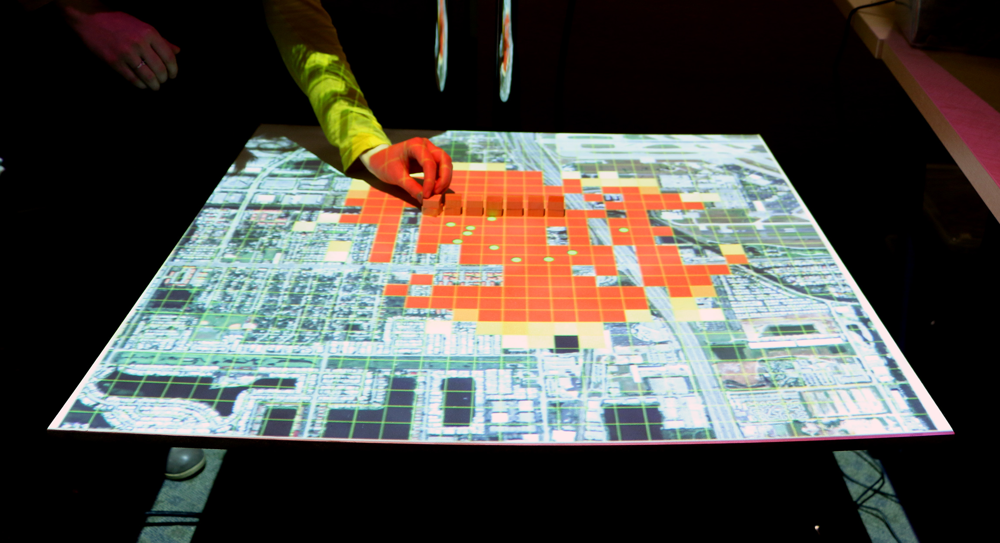

ACM Tangible Embedded Embodied Interaction 2016
Embodied Cognition with Tangible Landscape
Brendan Harmon, Anna Petrasova, Vaclav Petras, & Helena Mitasova

Physically manifesting digital data so that you can intuitively feel and shape it with your hands
 



To make scientific problem solving a game we need:
 
